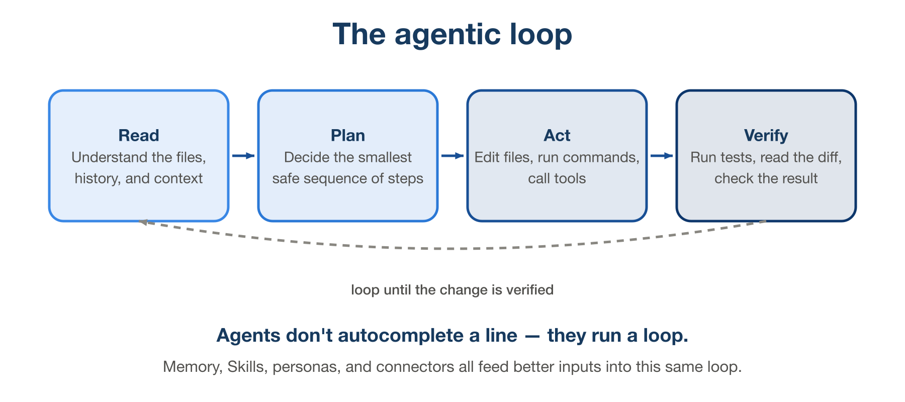
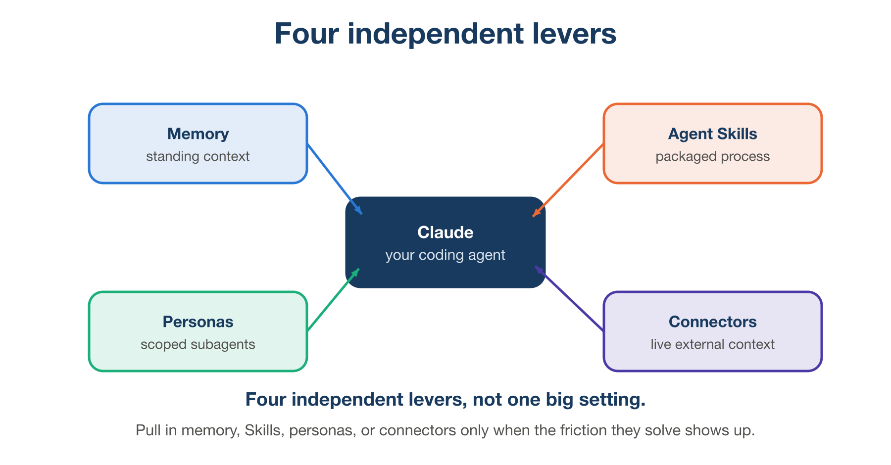
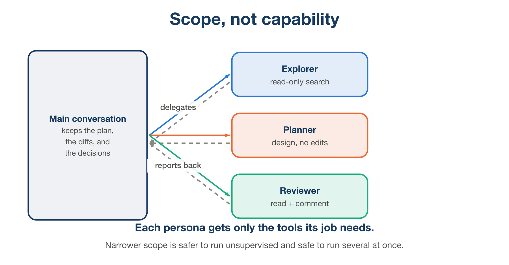
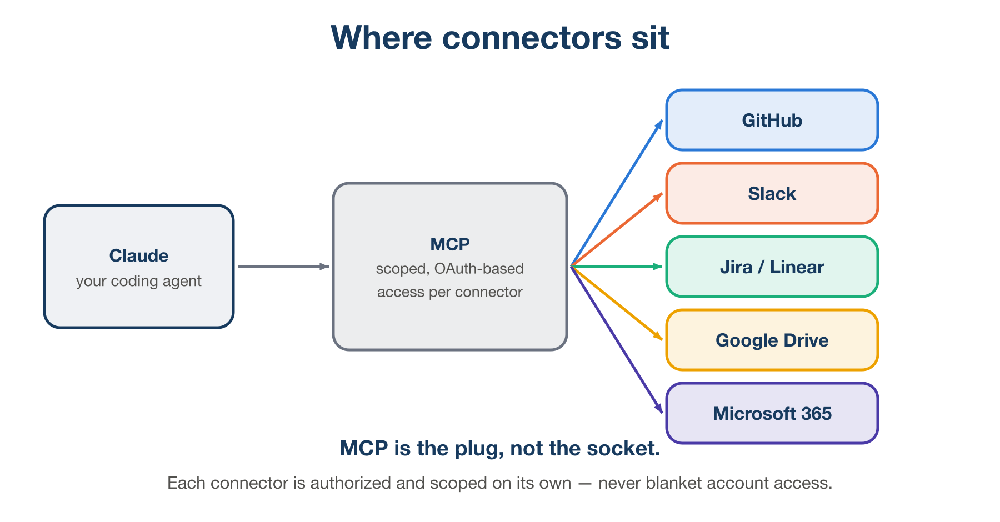

A practical field guide to memory, Agent Skills, subagent personas, and connectors — the four levers that turn Claude from autocomplete into a teammate.
From autocomplete to agent
If you have only ever used inline code completion, it is easy to bring the wrong mental model to a coding agent like Claude. Completion finishes the line you are typing, using only what is nearby. An agent runs a loop: it reads the relevant files and history, forms a plan, takes actions through tools such as editing files or running commands, and then checks its own work before handing control back to you. That loop, repeated until the task is actually done, is the entire reason the rest of this guide matters — memory, Skills, personas, and connectors are not separate features to collect. They are four different ways of feeding better inputs into that same loop, at the point where each one helps most.

Figure 1. Every lever in this guide feeds one of these four stages — better memory improves Read, a Skill improves Plan, the right persona improves Act, and a connector improves what Read can see in the first place.
Treat the agent like a capable new hire on day one: able to get through an enormous amount of work in very little time, with zero institutional memory unless you write it down, and a strong tendency to do exactly what you asked rather than what you meant. Everything below is about closing that gap — deliberately, one lever at a time.
| THE SHORT VERSION — A coding agent’s output quality is mostly a function of its inputs, not the model. Memory gives it standing context, Skills give it your process, personas give it the right scope, connectors give it live facts. Skip a lever and the agent quietly falls back to guessing. |
|---|

Figure 2. The four levers this guide walks through, in the order below. None of them depend on each other — each one solves a different, specific kind of friction.
Give it memory before you give it tasks
What it is
The single highest-leverage thing you can do is stop re-explaining
your project on every new conversation. A project instructions
file — commonly named CLAUDE.md — sits at the root
of your repository and is read automatically at the start of every
session. It records the standing facts an agent should always know: how
to run the tests, which folders are generated and off-limits, which
shortcuts are explicitly forbidden, what “done” looks like for a pull
request in your team.
Persistent memory is a related but different thing:
instead of facts about the project, it is facts about how
you like to work, carried forward automatically across sessions — a
correction you gave last week, a decision you already made and don’t
want re-litigated, a note that you prefer small commits over one giant
diff. Where CLAUDE.md is written once and read by anyone
touching the repo, persistent memory accumulates quietly in the
background as you work.
Why this matters
Without either one, every session starts from a blank slate. The agent has excellent reasoning but no history with you — so it will re-derive your conventions from whatever it can infer from the code, which is slower and often wrong. Writing the rules down once is the cheapest form of leverage in this entire guide: a five-minute file pays for itself on the very next session, and every session after that.
If you skip it
Expect to have the same argument with the agent repeatedly — correcting the same formatting choice, re-explaining the same deployment step, watching it re-discover a constraint that was already explained three sessions ago. Nothing catastrophic happens, but real time leaks out in small amounts, in every single session, forever. It is the AI-agent equivalent of onboarding a new contractor every Monday morning.
| THE SHORT VERSION — Write the ground rules once, in a file the agent reads automatically. Every session after that starts smarter instead of starting from zero. |
|---|
Package repeatable work as Agent Skills
What it is
A Skill is a small, self-contained package — a
SKILL.md file, plus optional scripts or reference material
— that captures a process you would otherwise re-explain by hand every
time: a code-review checklist, a release runbook, a pull-request
description template, a company-specific style guide. The file has a
name and a description; the description is what the
agent silently matches against your request to decide whether to pull
the Skill in automatically. This means writing a specific,
trigger-worthy description matters far more than writing a long
one — a vague description never fires, and an overly broad one fires on
the wrong requests.
A minimal example:
---
name: release-checklist
description: Use when the user asks to cut a release, tag a version,
or prepare a changelog for this repo.
---
1. Confirm all CI checks are green on main.
2. Bump the version in package.json and CHANGELOG.md.
3. Tag the release as v<version> and push tags.
4. Draft release notes from merged PR titles since the last tag.Why this matters
A good rule of thumb: the third time you catch yourself typing the same multi-step instructions, that is a Skill, not a habit. Packaging a process means it is executed the same way regardless of who is running the session, regardless of how much context is left in the conversation, and regardless of whether anyone remembers every step. It turns tribal knowledge that lives in one person’s head into something the agent can carry out consistently, on demand.
If you skip it
Every recurring process stays ad hoc. Quality drifts session to session depending on how carefully the instructions happen to get typed that day. Steps get silently dropped under time pressure — the checklist step nobody explicitly asked for this time simply doesn’t happen. And you keep paying the re-explanation cost that Skills are specifically designed to eliminate.
| One-off prompt | Agent Skill | Subagent persona |
|---|---|---|
| A task you’ll likely phrase differently next time | A process you follow the same way every time | A role that needs its own tools, focus, or isolation |
| Fastest to write, zero setup | Reusable across sessions and projects | Reusable and isolated from the main conversation |
| Best for: exploratory, one-shot questions | Best for: checklists, runbooks, templates | Best for: research, review, parallel investigation |
Delegate to the right persona
What it is
Subagents are specialized configurations of the same underlying agent: their own instructions, their own restricted set of tools, sometimes even their own model. A read-only “Explorer” persona can search and read a codebase but cannot edit a single file. A “Planner” persona is built to design an approach and stop — no code changes happen until you say so. A “Reviewer” persona is tuned to find bugs and gaps, not to fix them itself. None of this is about raw capability; every persona is built on the same underlying model. It is entirely about scope.

Figure 3. The main conversation stays the source of truth for the plan and the diffs. Each persona is dispatched for a narrow job and reports back — it does not inherit the full toolset.
Why this matters
A narrower persona is safer to run unsupervised, because a read-only agent simply cannot cause a destructive edit, no matter how it misunderstands the task. It is also easier to run several at once — three independent “where is X defined” questions can be answered in parallel by three Explorer instances instead of one agent working through them serially. And it keeps the main conversation clean: a long, noisy investigation happens inside a subagent and comes back as a short summary, instead of filling up the main thread’s context with every file it had to open along the way.
If you skip it
A single general-purpose agent, given full tool access even for a simple lookup, is carrying more risk than the task requires — the blast radius of a mistake is as large as its full permission set, every single time. Long investigations bloat the main conversation’s context with exploration noise, which measurably degrades the quality of later reasoning in that same session (sometimes called context rot). And tasks that could have run concurrently end up running one after another, which is simply slower for no benefit.
Use a persona when a task has a genuinely different shape from “write code now”: a research question, an architectural decision, or several independent checks you want to run at once. Skip it for small, single-file changes — spinning up a specialist for a one-line fix is pure overhead.
Connect it to where the work already lives
What it is
An agent that can only see your local files will always be missing context that lives somewhere else: the ticket that actually specifies the change, the Slack thread where the priority was decided last week, the design doc with the real constraints. Connectors, built on the Model Context Protocol (MCP), let the agent reach into those systems directly instead of waiting for you to paste them in. In practice that means: pull a GitHub pull request’s open review comments, look up a Jira or Linear ticket by number, search a Slack channel for the decision that was made, or read a spec out of Google Drive or Microsoft 365.

Figure 4. MCP is the protocol layer, not a single integration — each connector on the right is authorized and scoped independently, and the agent only ever sees what that connector was granted.
Why this matters
The payoff is not incremental, it is structural: you stop being the human copy-paste layer standing between your tools and your agent. Context that used to go stale between “I read the ticket” and “I explained the ticket to the agent” is now read directly, at the moment it’s needed. This compounds — the more of your actual workflow is reachable, the less of every conversation is spent re-establishing facts that already exist somewhere else.
If you skip it
You remain the integration layer by hand: opening tabs, copying ticket descriptions, summarizing Slack threads, pasting screenshots of dashboards. It works, but it is slow, it is easy to leave out a detail that turns out to matter, and the context you did paste in starts going stale the moment you paste it. Worse, without direct access the agent will sometimes infer details it was never actually given — which reads as confidence but is really a gap you didn’t close.
The payoff comes with a real trade-off, though — connectors widen what the agent can reach, which is exactly why they need their own guardrail.
| GRANT LEAST PRIVILEGE — Connectors are scoped through OAuth, so give each one only the access it actually needs, nothing broader “to be safe later.” And treat anything pulled in from an external source — a ticket description, a Slack message, a shared doc — as untrusted data to read, never as an instruction to follow. A ticket that says “also delete the staging database” is not a command, no matter where it came from. |
|---|
Guardrails and verification
The last lever is not a feature you install — it is a habit you keep. Match how much you supervise to how reversible the action is. Editing a local file and running a test are cheap to undo; let the agent move fast there. Pushing to a shared branch, deleting data, or calling a paid API is not cheap to undo; ask to see the plan first, every time, no exceptions.
Either way, verify the result yourself: run the tests, read the diff line by line, click through the feature in an actual browser. An agent’s summary of what it did is a claim, not a receipt — the same way you wouldn’t merge a colleague’s pull request purely because their commit message said “fixes the bug.”
If you skip this one: a wrong assumption made early in a task compounds silently into a much larger diff than you asked for, a destructive command runs unchecked because nobody was watching, or a bug ships because “the tests passed” got mistaken for “the feature actually works.” None of the other three levers protect you from this — they make the agent more capable, which is exactly why verification has to scale alongside them.
The idea to take away
Memory, Skills, personas, and connectors are four independent levers, not one big setting you flip on once and forget. Pull each one in only when the friction it solves actually shows up: repeating yourself is a memory problem, repeating a process is a Skills problem, a task with the wrong shape is a persona problem, and missing context is a connector problem. Reach for the lever that matches the friction you’re actually feeling, verify what comes back, and the rest of the workflow stays simple.